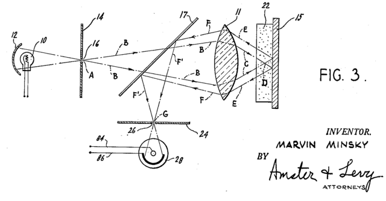
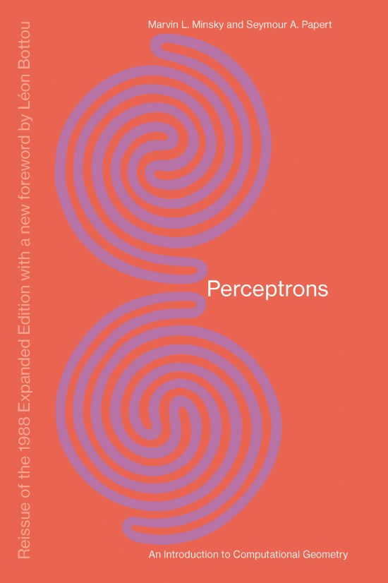
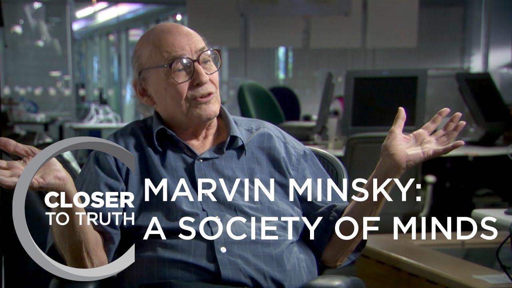

One of my favorite computer and cognitive scientists is indeed,
Marvin Minsky.
Professor Minksy was truly an eclectic person and was notified for his great inventions and contributions to the communities of the Computer and Cognitive Sciences. However, that's not why I admire Minsky the most. There are professors that you observe or take their class and it's another walk in the park. But Minsky, was so involved and questioned the norms that we thought to be absolute. He had an aura of curiosity and playfulness that came out through his teachings and the way he described his novel ideas. Minsky was very well an educated and bright indiviual in his own right, but he always wanted to question the status quo and that is my reason for writing about Dr. Minsky.
Academia
Marvin Minsky was born on August 9th, 1927 and sadly died almost exactly 5 years ago on January 24th, 2016 as of writing this. He held a BA in Mathematics from Harvard in 1950 and received his PhD in Mathematics from Princeton in 1954. His thesis was on “Theory of Neural- Analog Reinforcement Systems and its Application to the Brain Model Problem” (1954). In 1958, he joined MIT faculty in Electrical Engineering and Computer Science. Also in the same year, he founded (with John McCarthy) the MIT Computer Science and Artificial Intelligence Laboratory.
Inventions and Awards
Minsky had some notable inventions throughout his career. He created the first head-mounted graphical display in 1963, the confocal microscope in 1957 and built the first randomly wired neural network learning machine called, SNARC.
 Minsky's patent and blueprint to his Confocal Microscope in 1957
He also wrote published a few books like “The Emotion Machine” which talked about the different ways that the human mind worked and possible theories for explaining the inner-workings of the brain. Him and Seymour Papert also developed “The Social of Mind Theory” which discusses the baseline of what we call intelligence, could just be smaller, intelligent computers that work together to create what we call intelligence and moreso, consciousness.
In the academic community, he also published another book (along with Seymour Papert) called, “Perceptrons.” The book was posited to be the ground work in artificial neural networks. Some researchers praise his contributions from the book noting that the birth of the idea of perceptrons were a novel idea and were key reasons to where we are today. Other researchers aren’t as enthusiastic about the book, bringing up the idea the today’s technology doesn’t correlate much of what Minsky discusses, especially with the birth of backpropagation and the advent of deep learning.
"Perceptrons" published by Minsky and Papert in 1969
Notable awards -- won Turing Award in 1969, won the Benjamin Franklin Medal from Franklin Institute in 2001, in 2006 he was inducted as Fellow of the Computer History Museum and in 2011, he was inducted into IEEE Intelligent Systems AI’s Hall of Fame.
Philosophy of Mind and Life
Another aspect of Minsky that caught my attention when researching him, was his philosophy and how he answered some of life’s most provoking questions, and how he gave insight into ideas not thought of. Minsky was an atheist and if you ever listened to his worldview or read some of his books/articles, it wouldn’t take you long to put two-and-two together. This worldview could be a lens that perceives his ideas and theories, but regardless, his ideas make you think and I believe all ideas can add some sustenance.
Minsky did an interview with the interviews/writers called “Closer to Truth.” In this interview, Minsky unapologetically voiced his views about religion, immortality, his unease of being happy, and his thoughts of the future of communication going into a more and more digitized world.
One of the first things that I picked up from the interview was his ideas based on his two principles of AI -- the “symbolic school” of abstract manipulations and the “connectionist school” of unstructured self-organization. I thought these two schools of thought were notable discussions among AI and Philosophy scholars that introduce the notion of symbolism and connectionism. Symbolism is essentially involved the with higher, abstract concepts of how the mind works (more involved with good old-fashioned AI, “GOFAI”), while connectionism is more involved with the low-level implementation close to that of the human brain learns and trains on vast amount of information (more correlated with artificial neurons and neural networks). The fact that Minsky was the first among many to posit the two schools of AI was very interesting to note.
His thoughts on consciousness were wildly different from other AI and Philosophy scholars, notably some like Descartes (“I think, therefore I am”), Daniel Dennett, Nick Bostrom, Hubert Dreyfus, David Chalmers and Ray Kurzweil. He thought that the brain was wired like having mini-computers or “mini-modules” that worked in unity, terming it, “conscious unity.” Many researchers have tried to answer the consciousness question and have written many books on the matter, stemming from phenomenology, to epistemology, to key terms like “the singularity” and “superintelligence.” He viewed the brain more as a computer-like construct that just needed some debugging to understand how the fundamental workings of how the mind works, and ultimately consciousness.
Think for Yourself
In the last part of the interview, Minsky brought up the notion of how we all think with the advancement of technology. He talked about how mass communication can lead to mass manipulation.
“We’re under pressure to decide faster. How does Technology Transform Thinking? One of the most dangerous things is rapid communication in political affairs, where a TV network can ask, ‘What does the public think?’ and in minutes they say 70 percent of the people think this or that.”
Minsky was strongly fond of critical thinking and the ability to question the truth, no matter how dark or unsettling the outcome may be. He was dismissive of cultures and hated “groupthink,” always wanting everyone to think for themselves and come to their own conclusions. He often reminds me of the comedian, George Carlin, who said, Don’t just teach your children to read. Teach them to question what they read. Teach them to question everything.”
“But there’s a big difference between “impossible” and “hard to imagine.” The first is about it; the second is about you!”
And I think that quote beautifully depicts what Marvin Minsky stands for. Minsky wanted us to question the status quo and to not put people into belief and culture systems. He wanted us to challenge life and not be comfortable with the everyday monotonous existence that life gives us. He wanted to know how the mind worked, from the highly abstract, to the neuronal construct of the brain.
And so I implore you to go out and be a little bit like Minksy. In Nietzche’s term of the “Ubermensch,” try to be the master of your own self. But regardless, don’t let me tell you how to think. That’s something that I hope you’ll do yourself.
LD
References
Brains, Mind, AI, God: Marvin Minsky Thought Like No One Else
Marvin Minsky - "Closer to Truth"
Marvin Minsky - Media Lab
What Marvin Minsky Still Means for AI